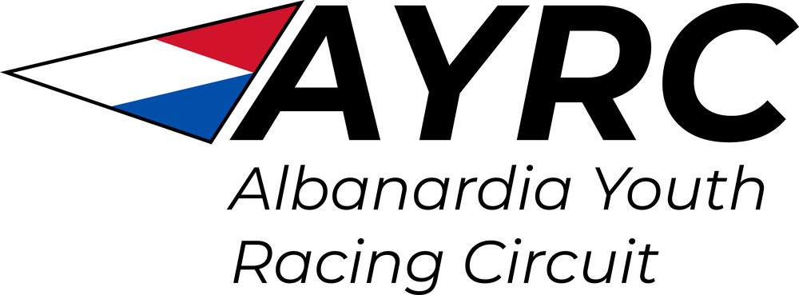

Eleven regattas from late May to late September, from the Sound to the cape, with one road trip to Barnegat Bay. Race as many as you like; your best seven count. The Championship on Hanson Bay closes the season.
ScheduleRegister
Every regatta is two days, with racing from 11 a.m. Saturday and a 3 p.m. last warning signal Sunday. Notices of race post 45 days before each event. Each venue hosts once a season.
| # | Dates | Regatta | Host |
|---|---|---|---|
| 1 | Sat May 22 to Sun May 23 | Foxford Spring Opener First stop of the season on the Sound, next to the Larssen boat works. | Foxford Yacht Club Foxford |
| 2 | Sat Jun 5 to Sun Jun 6 | Rutherford Harbor Regatta Lower-harbor courses off the Rutherford headland. | Northeastern Yacht Club Rutherford |
| 3 | Sat Jun 12 to Sun Jun 13 | Waterloo River and Bay Regatta River course for Green Fleet, bay course for everyone else. | Waterloo Yacht Club Waterloo |
| 4 | Sat Jun 26 to Sun Jun 27 | New Brolin Ocean Regatta Ocean courses beside the Olympic Sailing Pavilion. | New Brolin Yacht Club New Brolin |
| 5 | Sat Jul 10 to Sun Jul 11 | Corinthian Junior Regatta North-shore courses on Albanardia Bay. | Corinthian Yacht Club of Silverbrooks Whilliker |
| 6 | Sat Jul 24 to Sun Jul 25 | Hamilton Island Ferry Regatta Boats and sailors cross on the ferry Friday; camping on the island. | Hamilton Island Sailing Club Hamilton Island |
| 7 | Sat Jul 31 to Sun Aug 1 | Capital Youth Regatta River-mouth courses off the capital waterfront. | Albanardia City Yacht Club Albanardia City |
| 8 | Sat Aug 14 to Sun Aug 15 | AYRC Road Trip: Barnegat Bay The circuit's out-of-state stop, hosted by Toms River Yacht Club in New Jersey. | Toms River Yacht Club Toms River, NJ |
| 9 | Sat Aug 28 to Sun Aug 29 | Cape Sturgeon Open Water Regatta Open-water racing at the tip of the cape. | Cape Sturgeon Yacht Club Arlington |
| 10 | Sat Sep 11 to Sun Sep 12 | Pearl's End Harbor Regatta Inner-harbor racing off Pearl's End Point, perfect for spectators. | Pearl's End Sailing Center Silverbrooks |
| 11 | Sat Sep 25 to Sun Sep 26 | AYRC Championship The season finale on Hanson Bay. Counts for every sailor and can't be dropped. | Silverbrooks Yacht Club Silverbrooks |
Late spring: May 22, Jun 5, Jun 12, Jun 26 · Summer: Jul 10, Jul 24, Jul 31, Aug 14, Aug 28 · Early fall: Sep 11, Sep 25
Sailors pick one fleet for the season and can move up once, before the July 10 regatta.
Host clubs can add guest fleets when five or more boats register. Guest classes race for regatta trophies but don't score in the season standings.
Season registration opens March 1, 2027: $60 per sailor, plus $55 per regatta ($35 for Green Fleet). Register by the Wednesday before each regatta; late entries pay $20 more. NESF grants cover fees for any sailor who asks, no questions.
Host clubs charter Optimists, ILCAs, C420s and Club FJs at $90 a boat per regatta. The NESF loan pool keeps season charters for sailors without boats. The Barnegat Bay stop has charter boats arranged through the host club.
Final standings for the club team trophy. Individual results are posted for each regatta by the host club.
| Place | Club | Points |
|---|---|---|
| 1 | Albanardia City Yacht Club | 1,412 |
| 2 | Silverbrooks Yacht Club | 1,388 |
| 3 | Corinthian Yacht Club of Silverbrooks | 1,240 |
| 4 | Foxford Yacht Club | 1,196 |
| 5 | New Brolin Yacht Club | 1,023 |
| 6 | Northeastern Yacht Club | 954 |
| 7 | Waterloo Yacht Club | 712 |
| 8 | Cape Sturgeon Yacht Club | 640 |
| 9 | Silverbrooks Community Sailing Center | 588 |
| 10 | Pearl's End Sailing Center | 431 |
| 11 | Hamilton Island Sailing Club | 377 |
| 12 | Willamette Boating Center | 296 |
| 13 | Coven Community Sailing | 241 |